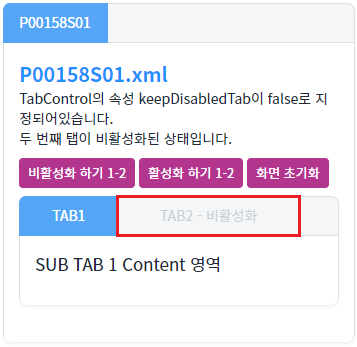
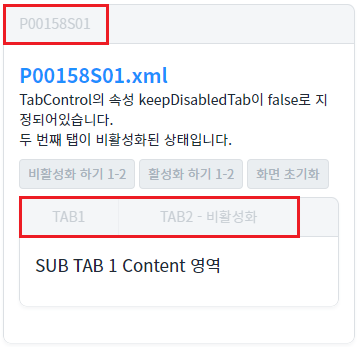
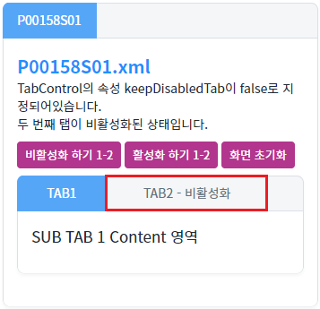
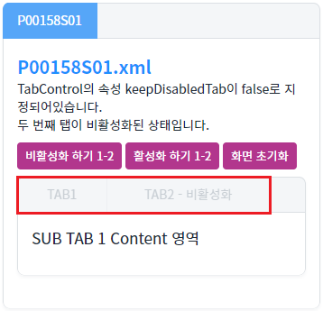
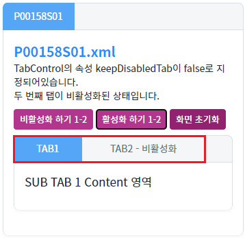
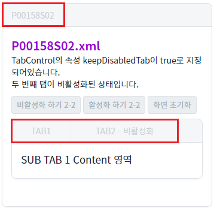
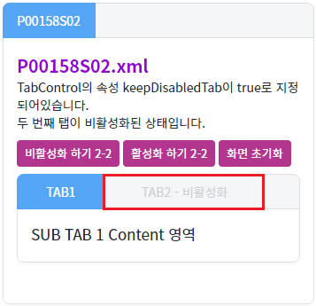
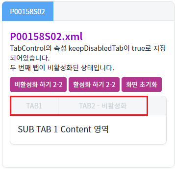
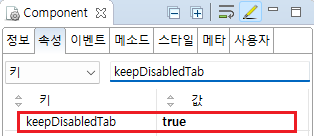

TabControl의 'keepDisabledTab' 속성을 사용하여, 탭의 비활성화를 유지하도록 설정한 예제입니다.
'keepDisabledTab' 속성은 'setDisabled' 메소드로 TabControl을 활성화할 때, 'disableTab' 메소드로 비활성화된 탭의 비활성화 상태를 유지하는 속성입니다. 이 기능은 상위 TabControl의 'setDisabled' 메소드 또는 'enableTab' 메소드를 호출할 때도 동작합니다.
(기본 동작) keepDisabledTab 미사용
keepDisabledTab 사용
예제 영역 '(기본 동작) keepDisabledTab 미사용'에서 테스트합니다.1
STEP 1: 하위 TabControl 상태 확인하기
TabControl의 탭 'P00158S01'에 구성된 TabControl을 확인합니다.
탭 'TAB2 - 비활성화'가 비활성화 된 상태입니다.
Image 1.브라우저(Chrome) 실행 예시

2
STEP 2: 상위 TabControl을 비활성화 합니다.
'비활성화 하기 1-1' 버튼을 클릭합니다.
3
STEP 3: 실행 결과를 확인합니다.
상위 TabControl과 하위 TabControl이 모두 비활성화 됩니다.
Image 2.브라우저(Chrome) 실행 예시

4
STEP 4: 상위 TabControl을 활성화 합니다.
'활성화 하기 1-1' 버튼을 클릭합니다.
5
STEP 5: 실행 결과를 확인합니다.
상위 TabControl과 하위 TabControl이 모두 활성화 됩니다. (기존에 비활성화 되어 있던 하위 TabControl의 'TAB2 - 비활성화'도 활성화됩니다)
Image 3.브라우저(Chrome) 실행 예시

6
STEP 6: 탭 콘텐츠 화면 초기화 하기
TabControl의 탭 'P00158S01'에 구성된 '화면 초기화' 버튼을 클릭합니다.
7
STEP 7: 하위 TabControl 상태 확인하기
TabControl의 탭 'P00158S01'에 구성된 TabControl을 확인합니다.
탭 'TAB2 - 비활성화'가 비활성화 된 상태입니다.
Image 4.브라우저(Chrome) 실행 예시
8
STEP 8: 하위 TabControl을 비활성화 합니다.
TabControl의 탭 'P00158S01'에 구성된 '비활성화 하기 1-2' 버튼을 클릭합니다.
9
STEP 9: 실행 결과를 확인합니다.
하위 TabControl이 비활성화 됩니다.
Image 5.브라우저(Chrome) 실행 예시

10
STEP 10: 하위 TabControl을 활성화 합니다.
'활성화 하기 1-2' 버튼을 클릭합니다.
11
STEP 11: 실행 결과를 확인합니다.
하위 TabControl이 모두 활성화 됩니다. (기존에 비활성화 되어 있던 Tab도 활성화됩니다)
Image 6.브라우저(Chrome) 실행 예시

예제 영역 'keepDisabledTab 사용'에서 테스트합니다.1
STEP 1: 하위 TabControl 상태 확인하기
TabControl의 탭 'P00158S02'에 구성된 TabControl을 확인합니다.
탭 'TAB2 - 비활성화'가 비활성화 된 상태입니다.
Image 7.브라우저(Chrome) 실행 예시
2
STEP 2: 상위 탭을 비활성화 합니다.
'비활성화 하기 2-1' 버튼을 클릭합니다.
STEP 3: 실행 결과를 확인합니다.
상위 TabControl과 하위 TabControl이 모두 비활성화 됩니다.
Image 8.브라우저(Chrome) 실행 예시

3
STEP 4: 상위 TabControl을 비활성화 합니다.
'활성화 하기 2-1' 버튼을 클릭합니다.
4
STEP 5: 실행 결과를 확인합니다.
상위 TabControl이 활성화되고 하위 TacControl의 비활성화 되었던 탭은 상태가 유지됩니다.
Image 9.브라우저(Chrome) 실행 예시
5
STEP 6: 탭 콘텐츠 화면 초기화 하기
TabControl의 탭 'P00158S02'에 구성된 '화면 초기화' 버튼을 클릭합니다.
6
STEP 7: 하위 TabControl 상태 확인하기
TabControl의 탭 'P00158S02'에 구성된 TabControl을 확인합니다.
탭 'TAB2 - 비활성화'가 비활성화 된 상태입니다.
Image 10.브라우저(Chrome) 실행 예시

7
STEP 8: 하위 TabControl을 비활성화 합니다.
TabControl의 탭 'P00158S02'에 구성된 '비활성화 하기 2-2' 버튼을 클릭합니다.
8
STEP 9: 실행 결과를 확인합니다.
하위 TabControl이 비활성화 됩니다.
Image 11.브라우저(Chrome) 실행 예시

9
STEP 10: 하위 TabControl을 활성화 합니다.
'활성화 하기 2-2' 버튼을 클릭합니다.
10
STEP 11: 실행 결과를 확인합니다.
하위 TabControl이 활성화되고 비활성화 되었던 탭은 상태가 유지됩니다
Image 12.브라우저(Chrome) 실행 예시
1
속성을 정의합니다.
비활성화 상태를 유지할 TabControl에 속성을 정의합니다. 예제의 경우 파일 'P00158S02.xml'에 설정되어있습니다.
[필수] keepDisabledTab="true"
TabControl을 disabled 처리할 경우, 각 탭의 disabled 유지 여부.
Image 13.웹스퀘어 스튜디오의 Component View - 속성 설정 예시

Example 1.Source
<!-- tabControl 소스 본문 예시. 예제 파일 P00158S02.xml --> <w2:tabControl keepDisabledTab="true" id="tac_exam1"> <!-- 중략 --> </w2:tabControl>
keepDisabledTab
disableTab( tabIndex )
setDisabled( disabled )